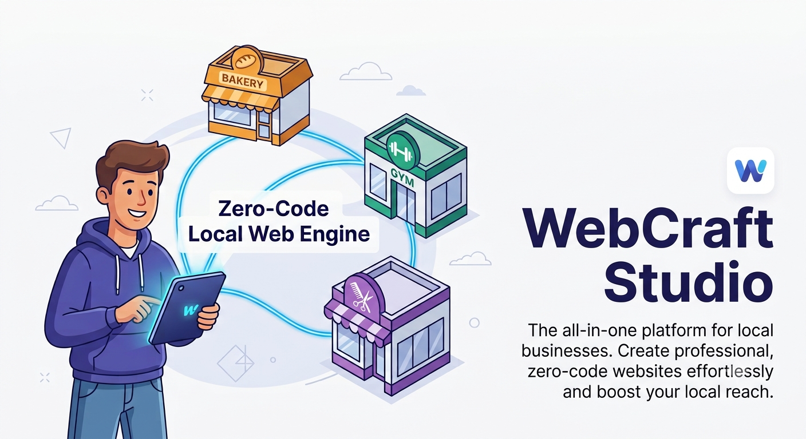

Everything you need to turn notes from your client discovery notebook into active, live websites.
Review layout alterations side-by-side. Update text parameters, toggle color fields, and issue rapid file re-generation seamlessly.
Clean, pre-optimized component frameworks serving local bakeries, fitness gyms, barbershops, and specialized boutiques perfectly.
Equipped with immediate conversion anchors including dedicated WhatsApp message generation forms, quick call hooks, and location mapping details.